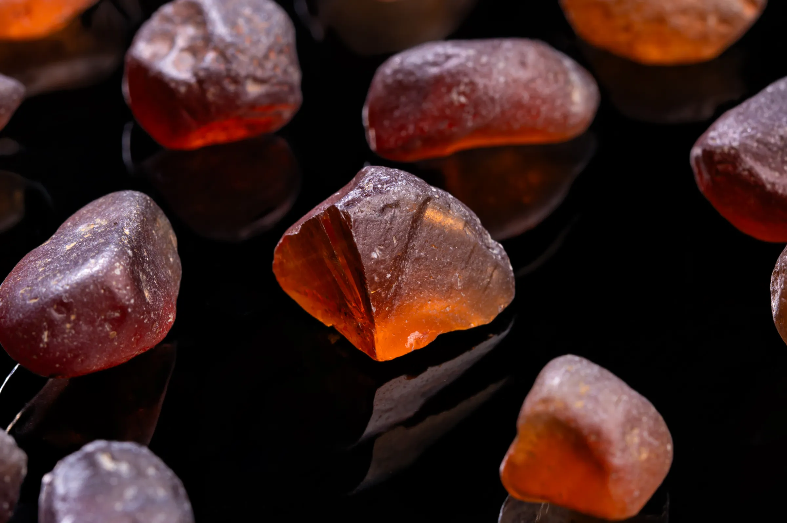
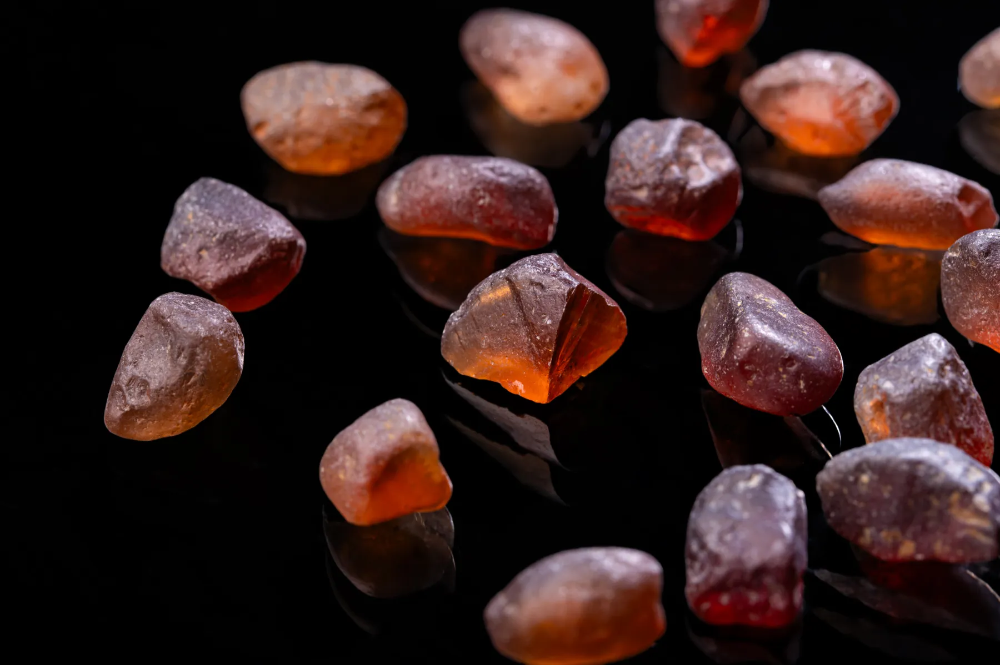
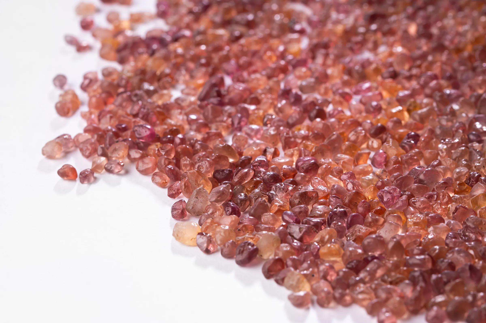
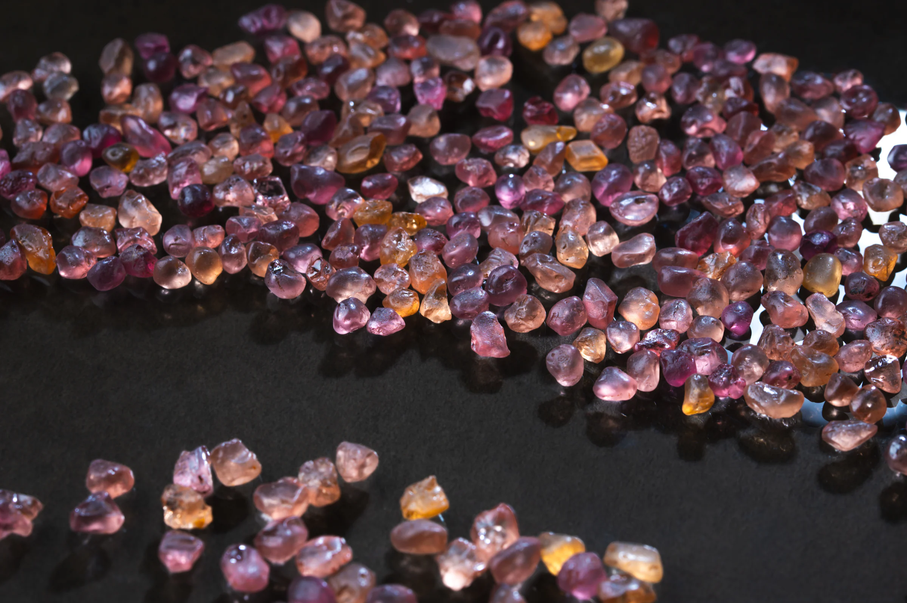
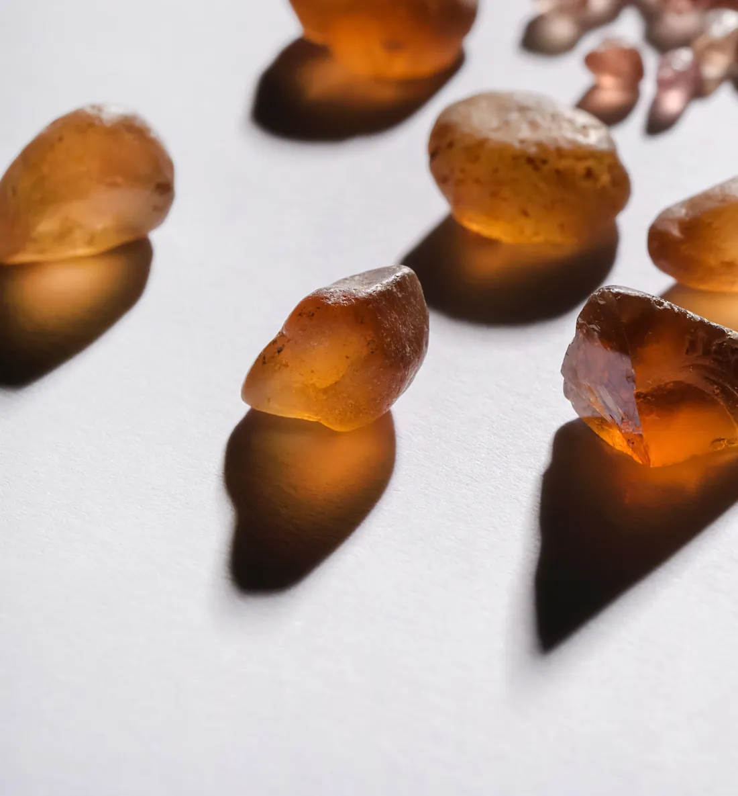
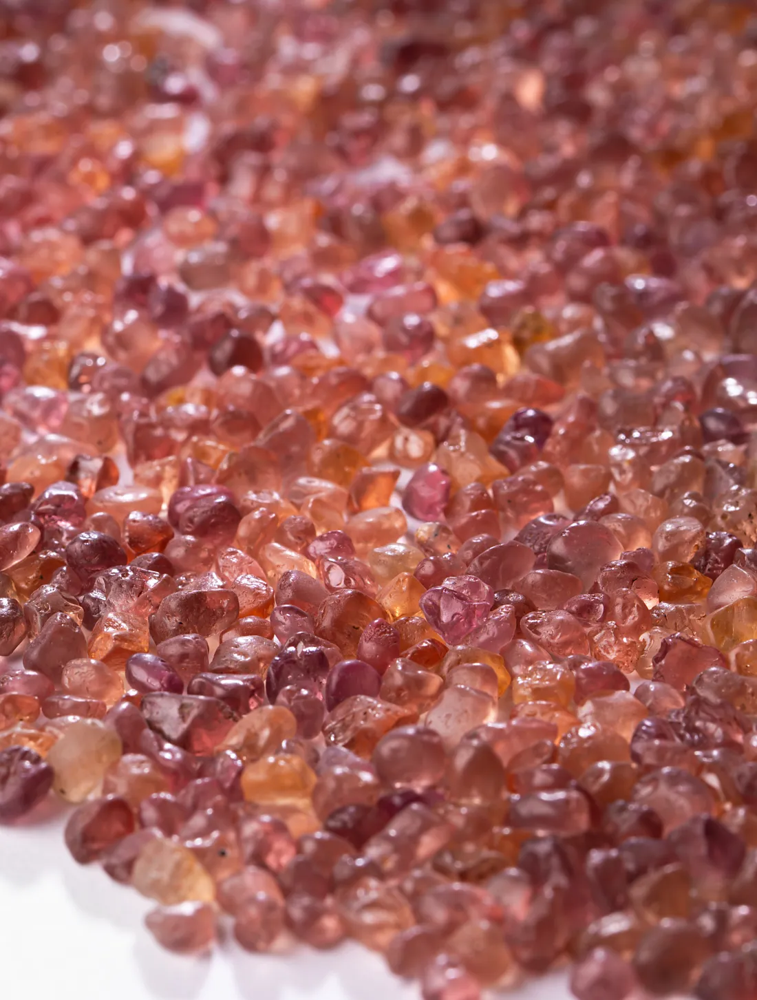
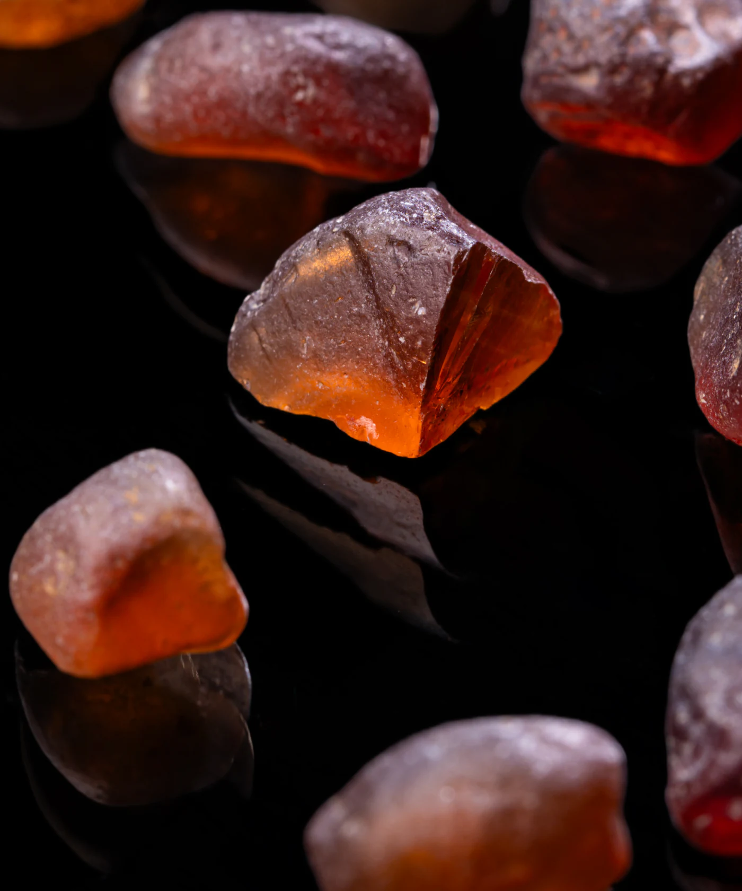
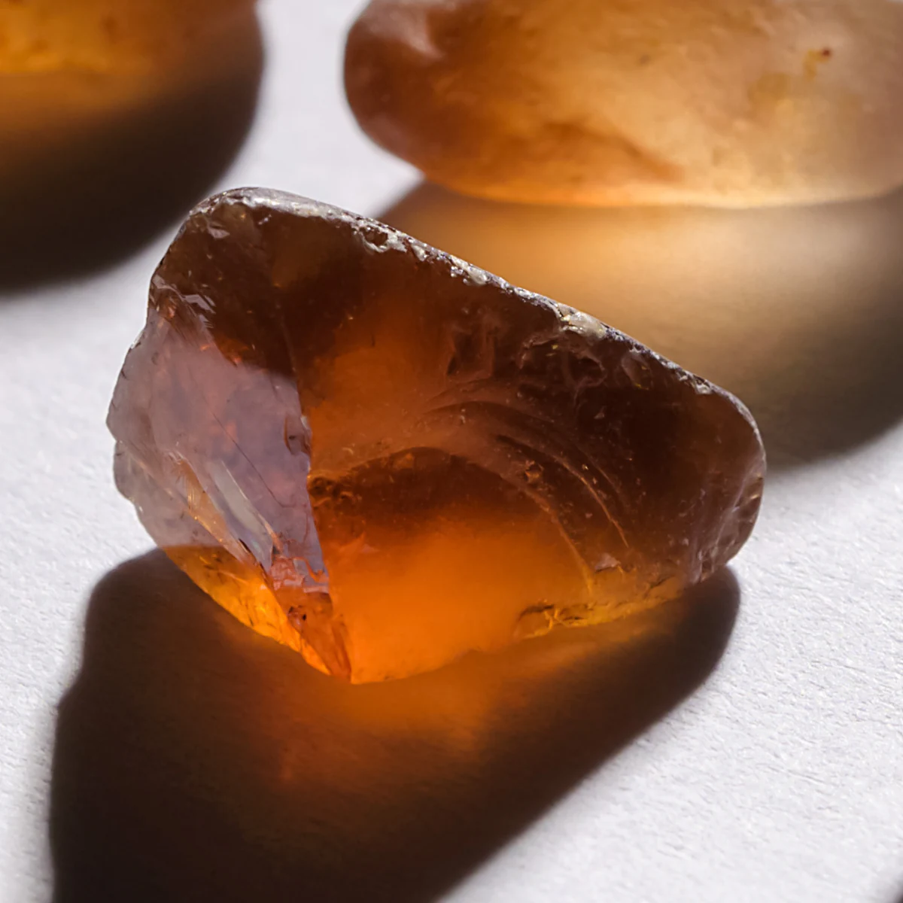

The 1990s
Discovered by local miners in the Umba River Valley, straddling Tanzania and Kenya.

In the heart of East Africa, amidst the rugged terrain and sweltering heat, lies a precious stone that was discovered in the 1990s by local miners in the Umba River Valley, straddling Tanzania and Kenya.
It was once an outcast, an anomaly in a world of traditional precious stones. But like all great stories, it refused to be defined by its circumstances.

Discovered by local miners in the Umba River Valley, straddling Tanzania and Kenya.
It refused to conform to the norms of the precious stone world, carving out its path and creating a legacy that will endure for generations.
Cherished by the likes of the ancient Egyptians and Romans, who recognized its brilliance and fire.


Fire
[noun]
The flashes of spectral colour a stone throws as it splits white light.
Malaya garnet is a rare precious stone with exceptional fire and dispersion.
Ideal for faceting with cushion, round, or oval cuts.
Its Mohs hardness score of 7 to 7.5 ensures durability, making it a timeless beauty that can be cherished for generations.

5 ct
And over — incredibly scarce
Its scarcity makes it a valuable treasure, with larger stones over 5 carats being incredibly scarce, and even 2 or 3-carat pieces of top-grade quality can be hard to come by.


As we gaze upon its beauty, we can't help but feel a sense of wonder and admiration.
And yet, it remains a hidden gem, known only to a select few who truly appreciate its value.
But what makes the Malaya Garnet truly special is its story of resilience and triumph.
It reminds us that we too can overcome our circumstances and achieve greatness, that we too can shine like the sun's last rays at twilight.
